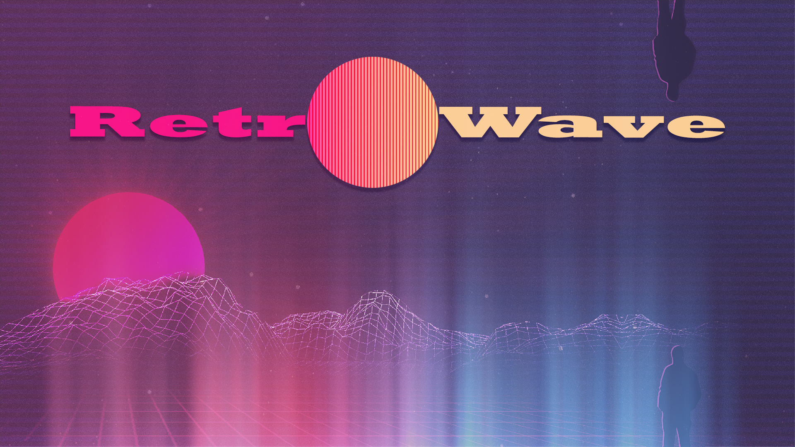

Synthwave, или Retro Wawe на стыке жанров электро-поп и яхт-рока стал своеобразным симбиозом. Казалось бы, что может быть проще - совместить старое со старым?
Однако, здесь мы получили не какой-то случайный выкидыш (как в своё время случилось с Grind-core). А настоящий талисман ретроспективы.
Вызывающий эмоции даже у самых далёких от кулютуры 80-х и литературного киберпанка.
Слушая атмосферные затянутые синты и часто фигурирующую соляру, бумеры стали кусать локти от ностальгии.
Зумеры же теперь представляют себя в амплуа настоящего полицейского Майами, разъезжающего на Ford LTD 1978.
Так что это за жанр, и какие подвиды музыки в нём есть?! Давайте разбираться.
"Retro Wave"
Жанровая классификация синтвейва в ретроспективые 80-х. В такой же ритмитке и соответсвующей стилистике звучания.
Музыка напоминает звучание старых игровых автоматов, в частности пинбол.
Колорит мелодии дополняют широкополосные синтезаторы и сочная соло гитара (обычно звучит в середине и под конец композиции).
Главный акцент делается на ударные. Бит основной принцип существования такой музыки. При прослушивании так и навеевает атмосфера старых боевиков 80-х.
Именно поэтому на многих ютуб каналах, фоновым изображением сопровождающим мелодию можна увидеть легенд Голливуда - Шварца Неггера, или Сильвестра Сталлоне.
.jpg)
Следующий поджанр представляет из себя более спокойную версию первого. Здесь в большинстве вы будете слышать саксофон, легкие клавишные паттерны и завывающуюю
(в хорошем смысле) мелодию синта. При прослушивании создаётся атмосфера вечернего пляжа Майами, или автострады на встречу угасающему солнцу в закате.
Такую музыку приятно слушать тихим спокойным вечером дома за стаканом виски. Или тем же вечером мчась на авто вдоль пролетающих мимо домов.
Ну и если у тебя есть девушка, да-да у тебя! Разделяющая твои музыкальные вкусы - ты сам знаешь что делать.
Пальмы и ламповый стиль главный козырь этой музыки.
Из названия становится ясно - это музыка того самого 2077. Однако, нет. Киберпанк как жанр представляет из себя несколько концептов.
1. Игровой: Cyberpunk 2077 почти лишён атмосферы неонуара 80-х, в том числе и музыки. Синтвейв в игре не прописан. Этот мир более хаотичен.
2. Кино: Яркий пример - Бегущий по лезвию. Фильм создан в 80-е. В года, когда истерия по неонуару только начинала набирать обороты.
Идельный туманный мир будущего, с характерной тяжёлой историей и ранимыми персонажами, разумеется дополненными прекрасным сануддизайном Vangelis.
3. Литературный: Нейромант идеальный представитель жанра. Он совмещает в себе 2 выше упомянутых концепта. Динамичная событийность подкреплённая нуарной философией.
Книга не заставит заскучать. В голове так и звучат синты представителей музыкального поджанра.

Представитель синтвейва не нуждающийся в особом об'яснении. Отсылки на фантастику 70-80х годов в стиле
Арт-деко, или позднем "электронном футуризме" не оставляют равнодушным никого. Ровно как и музыка.
"Космос - наше всё", характерно не только для сопутствующего жанра Sovietwave. Retro Wave так же полон "вакуумных" вайбов и стилизованых музыкальных семплов.
Чувство тревоги, опасности, внезапной радости и свободы. Всё это присуще данному поджанру. Будьте осторожны - космоботы не дремлят!